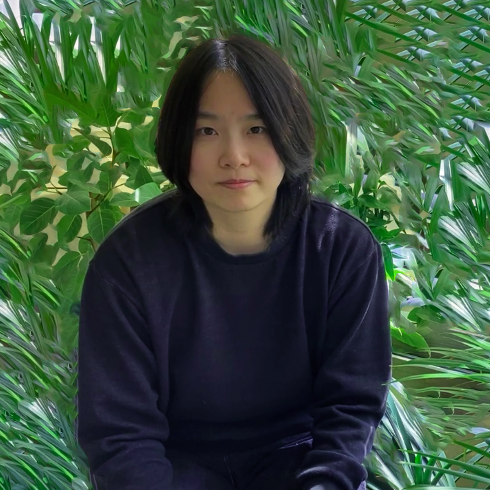

🌱 open-source software for
creative coding × informal learning 🌱
Currently:
- ─ developing docs for p5.js Friendly Errors System as a technical writer through...
- ┈┈ a survey for improving and re-imaging Friendly Errors
- ┈┈ a guideline for error writing and internationalization
- ─ developing behavior tree-based multiagent simulation: Football Practice
- ─ running daily workshops for my 6-year-old └(·◡·)┐
Previously: